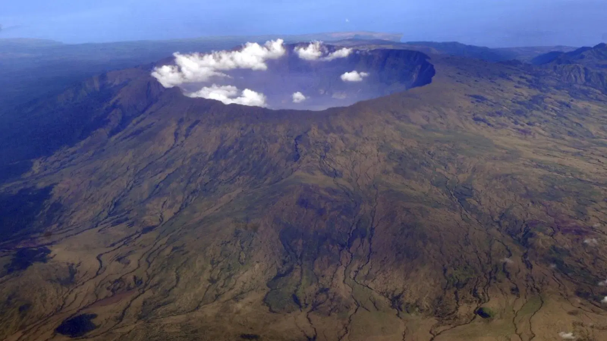
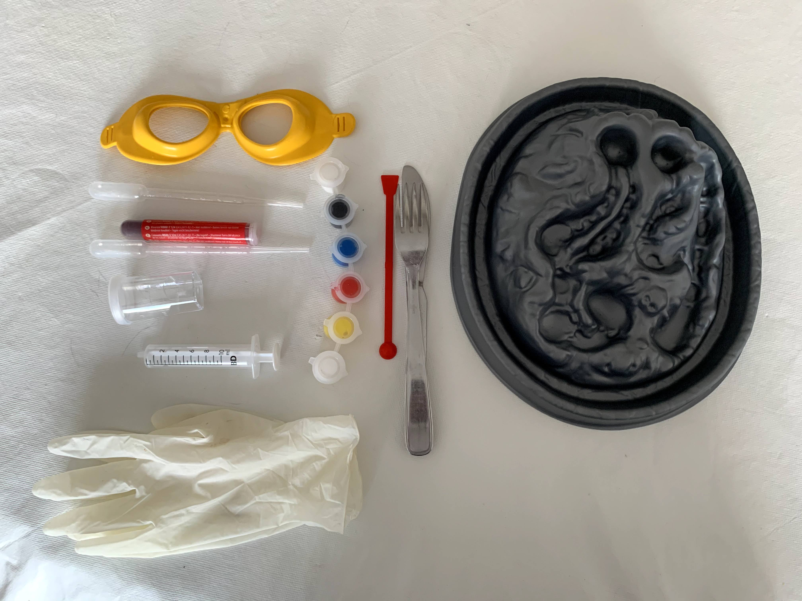
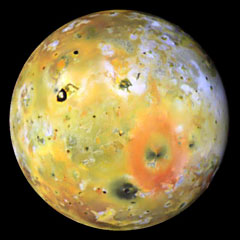
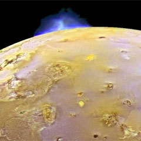
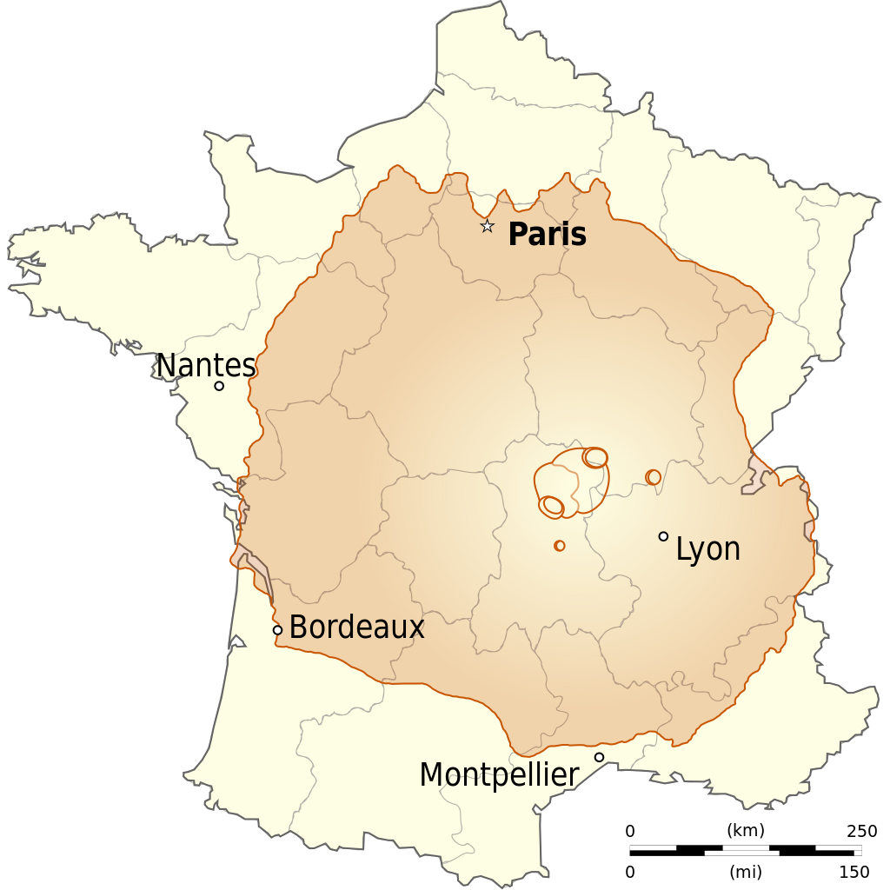
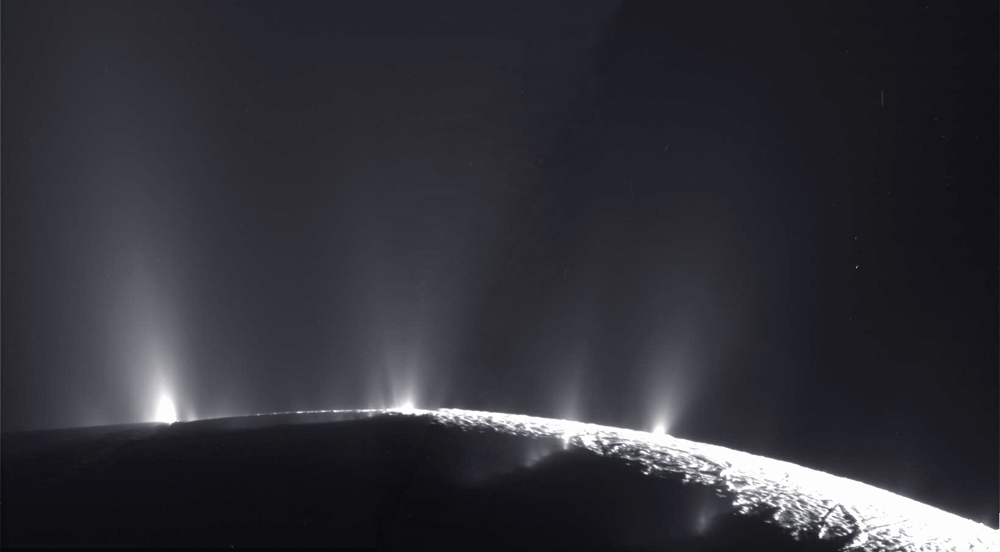

Théo - 7 ans
CP Vert - École St Joseph
6 mots autours des volcans
- Éruption
- Bombes
- Cratère
- Cheminée
- Magma, lave
- Chambre magmatique
Quelles sont les différentes sortes de volcans ?
Un volcan, c'est dangeureux ?
Le Mont Tambora en Indonésie

Comment se forment les volcans ?
Peut-on faire un petit volcan dans son salon ?
Recette pour un mini volcan
- Un moule en forme de volcan,
- du plâtre (avec papa ou maman),
- de la peinture noire, rouge, orange,
- des petits cailloux,
- pleins d'outils rigolos: pinceaux, cuillère, fourchette,
- des lunettes pour se protéger

Quels sont les volcans les plus bizarres ?
Les volcans extra-terrestres
IO autours de la planète Jupiter
il est trop près de Jupiter, alors cela déclenche plein d'éruptions.


Quel est le plus grand volcan du monde ?
C'est le mont Olympe ou Olympus Mons sur la planète Mars
il mesure 22 kilomètres de haut
il fait plus de 500 kilomètres de large
Il est grand comme la france !

Les volcans super bizarres : les cryovolcans
Ce sont des volcans qui font des éruptions de glaces, des volcans froids autours de Saturne sur Encelade
